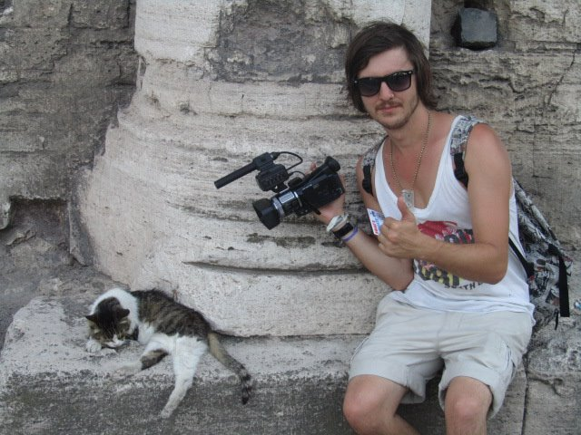
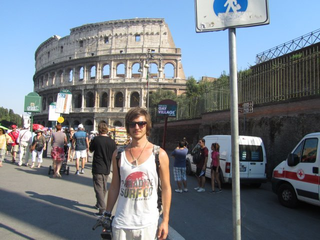
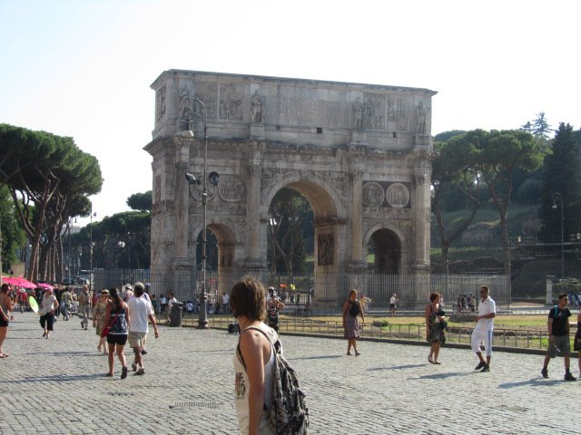
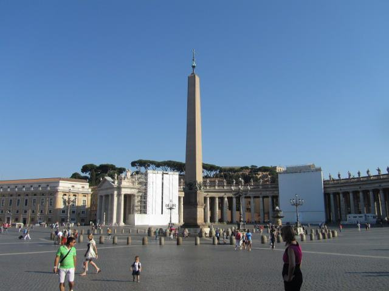
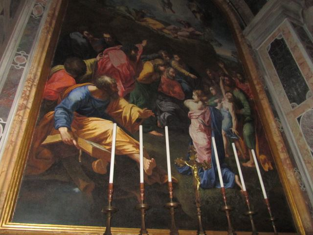

Journey Through Rome: Your Comprehensive Travel Guide
Introduction
Rome, the eternal city, is a mesmerizing blend of ancient history, vibrant culture, and modern dynamism. As the capital of Italy, Rome boasts iconic landmarks, breathtaking architecture, and a culinary scene that delights every palate. Whether you're an art lover, history enthusiast, or simply seeking the charm of a bustling metropolis, Rome offers an unforgettable experience.
How to Get There
Rome is well-connected to various parts of Italy and the world. Here’s how you can reach this magnificent city:
- By Air: Rome's Leonardo da Vinci–Fiumicino Airport (FCO) is the main international gateway, serving numerous global destinations. From the airport, you can take the Leonardo Express train, buses, taxis, or private transfers to reach the city center.
- By Train: Rome is a central hub in Italy's extensive rail network. High-speed trains (Frecciarossa, Italo) connect Rome to major cities like Milan, Florence, Venice, and Naples in just a few hours.
- By Car: Driving to Rome is convenient via the A1 Autostrada (Autostrada del Sole) from cities like Florence and Naples. The drive offers scenic views of Italy's diverse landscapes.
- By Bus: Long-distance buses operated by companies like FlixBus and MarinoBus offer affordable travel options to Rome from various Italian cities and neighboring countries.
- By Ferry: For travelers coming from the Mediterranean islands or coastal regions, ferries connect Rome's port of Civitavecchia to destinations like Sardinia, Sicily, and Greece.
Top Attractions in Rome
1. Colosseum
The Colosseum is Rome's most iconic landmark, a testament to ancient Roman engineering and gladiatorial combat. Visitors can explore its vast arena, underground chambers, and learn about its historical significance through guided tours.
2. Vatican City
As the smallest independent state in the world, Vatican City is the spiritual center for millions of Catholics. Key attractions include St. Peter's Basilica, the Vatican Museums, and the Sistine Chapel, renowned for Michelangelo's masterpiece ceiling.
3. Trevi Fountain
The Trevi Fountain is one of the most famous fountains globally, celebrated for its stunning Baroque design. Tradition dictates that visitors toss a coin into the fountain to ensure a return visit to Rome.
4. Pantheon
The Pantheon is a marvel of ancient architecture, originally built as a temple to all Roman gods. Its massive domed ceiling and oculus create a mesmerizing interior, making it a must-visit site for history and architecture enthusiasts.
Tips and Recommendations
Do’s and Don’ts
- Do: Wear comfortable walking shoes, as Rome involves a lot of walking, especially on cobblestone streets.
- Don’t: Miss the opportunity to explore Rome’s lesser-known neighborhoods like Trastevere and Testaccio for a more authentic experience.
- Do: Bring a hat, sunglasses, and sunscreen, particularly if visiting during the summer months.
- Don’t: Ignore the local customs and etiquette, especially when visiting religious sites.
- Do: Take advantage of the extensive public transportation system, including buses, trams, and the Metro, to navigate the city efficiently.
- Don’t: Engage in loud or disruptive behavior in public places, as Italians value politeness and respect.
Packing List
- Comfortable walking shoes.
- Weather-appropriate clothing (layers for spring/fall, sun protection for summer).
- Reusable water bottle to stay hydrated while exploring.
- A backpack for carrying snacks and essentials.
- A map or guidebook to navigate Rome’s sprawling attractions.
- Insect repellent and personal hygiene items.
- Portable charger for your electronic devices.
- Light jacket or sweater for cooler evenings.
- Umbrella or raincoat for unexpected weather changes.
- Basic Italian phrases to enhance your interactions with locals.
Costs
- Entry Fees: Most major attractions and museums charge an entrance fee (e.g., €16 for the Colosseum).
- Transportation: A Roma Pass (24-hour) costs around €28 and covers public transportation as well as discounted entry to various attractions.
- Food: Meals at local trattorias and restaurants range from €15-30 per person, depending on the establishment.
- Accommodation: Prices vary widely based on location and quality, from budget hostels at €25 per night to luxury hotels exceeding €300 per night.
Currency and Money Matters
The official currency in Rome, as in the rest of Italy, is the Euro (€). Here's what you need to know about managing your finances during your trip:
Currency Exchange
Currency exchange services are widely available in Rome, including at the airport, banks, and authorized exchange counters. It's advisable to exchange a small amount of money upon arrival for immediate expenses.
ATMs and Banking
ATMs are readily accessible throughout the city, especially in major districts and tourist areas. Most ATMs accept international debit and credit cards. However, it's a good practice to inform your bank of your travel plans to avoid any issues with card usage abroad.
Credit Cards
Credit cards (Visa and Mastercard) are widely accepted in hotels, restaurants, and larger shops. However, smaller establishments and street vendors may prefer cash, so it's recommended to carry some euros for such situations.
Tips
Tipping in Rome is appreciated but not mandatory. A tip of 5-10% is common for good service in restaurants, while rounding up the bill is sufficient for cafes and casual dining.
Practical Information
Best Time to Visit
The optimal times to visit Rome are during the spring (April to June) and fall (September to November). During these periods, the weather is mild, and the tourist crowds are more manageable compared to the peak summer months. Springtime brings blooming flowers and pleasant temperatures, while autumn offers crisp air and colorful foliage.
Getting There
Rome is well-connected by air, rail, and road:
- By Air: Rome's Leonardo da Vinci–Fiumicino Airport (FCO) is the main international gateway, serving numerous global destinations. From the airport, you can take the Leonardo Express train, buses, taxis, or private transfers to reach the city center.
- By Train: Rome is a central hub in Italy's extensive rail network. High-speed trains (Frecciarossa, Italo) connect Rome to major cities like Milan, Florence, Venice, and Naples in just a few hours.
- By Car: Rome is accessible via the A1 Autostrada (Autostrada del Sole) from cities like Florence and Naples. The drive offers scenic views of Italy's diverse landscapes.
- By Bus: Long-distance buses operated by companies like FlixBus and MarinoBus offer affordable travel options to Rome from various Italian cities and neighboring countries.
- By Ferry: For travelers coming from the Mediterranean islands or coastal regions, ferries connect Rome's port of Civitavecchia to destinations like Sardinia, Sicily, and Greece.
Language
The official language is Italian. While English is commonly spoken in tourist areas, learning a few basic Italian phrases can enhance your interactions with locals and enrich your travel experience.
Health and Safety
Rome is generally safe for travelers, but it's important to take standard precautions:
- Stay hydrated and protect yourself from the sun, especially during summer months.
- Be cautious with your belongings, particularly in crowded areas and on public transport.
- Use reputable tour operators and guides for activities and excursions.
- Ensure you have appropriate travel insurance covering health and activities.
Cultural Immersion
Immerse yourself in Rome’s rich culture through various local traditions and activities:
- Palace Tours: Explore the grandeur of Rome’s numerous palaces and historical buildings, each with its unique architectural style and historical significance.
- Local Markets: Visit markets like Campo de' Fiori and Porta Portese Flea Market to experience the local cuisine, crafts, and vibrant community life.
- Art and Music: Attend performances at local theaters and concert halls, or visit art galleries showcasing regional artists.
- Festivals: Participate in events such as the Rome Film Fest or the Festa della Repubblica to experience local festivities and cultural celebrations.
- Historical Workshops: Engage in workshops that delve into Rome’s history, architecture, and cultural heritage, offering a deeper understanding of the city's legacy.
- Boat Tours: Take a boat tour along the Tiber River or the Aurelian Walls to enjoy scenic views of Rome’s landscapes and landmarks from the water.
Food and Cuisine
Rome offers a delightful mix of traditional Italian cuisine and modern culinary innovations. Here are some must-try dishes and dining experiences:
- Carbonara: A classic Roman pasta dish made with eggs, Pecorino Romano cheese, pancetta, and black pepper.
- Cacio e Pepe: A simple yet flavorful pasta dish featuring Pecorino Romano cheese and black pepper.
- Supplì: Fried rice balls typically filled with tomato sauce, mozzarella, and sometimes ground meat.
- Saltimbocca: Thin slices of veal topped with prosciutto and sage, cooked in white wine and butter.
- Maritozzi: Sweet buns filled with whipped cream, perfect for a delightful breakfast or snack.
- Gelato: Italy’s famous ice cream, available in a variety of flavors from numerous gelaterias around the city.
- Local Wines: Savor a variety of Italian wines, including Frascati and Cesanese, available at numerous wine bars and restaurants.
- Trattorias and Osterias: Enjoy authentic Roman dishes at traditional trattorias and osterias, where you can experience the warmth of local hospitality.
- Street Food: Taste authentic Italian street food like panini, pizza al taglio, and gelato from local vendors.
- Fine Dining: For a more upscale experience, visit Rome’s gourmet restaurants offering innovative dishes and exquisite wines.
I highly recommend dining at local trattorias and cafes to savor authentic Roman flavors and enjoy the city's lively atmosphere.
Adventure and Activities
Rome offers a wide range of activities for adventure enthusiasts and nature lovers:
- Boat Tours: Explore the scenic waterways of the Tiber River or take a boat tour to the nearby Ostia Antica for a unique perspective of Rome’s landscapes and maritime beauty.
- Hiking and Biking: Discover Rome’s natural beauty through its extensive network of hiking and biking trails in areas like the Appian Way Regional Park and Villa Borghese gardens.
- Segway Tours: Navigate the city’s landmarks and parks effortlessly on a guided Segway tour, providing a fun and efficient way to explore Rome.
- Horseback Riding: Enjoy horseback riding excursions through Rome’s picturesque landscapes and forested areas, offering a tranquil escape from the urban bustle.
- Golfing: Play a round of golf at one of Rome’s beautiful golf courses, surrounded by lush greenery and scenic views.
- Kayaking and Canoeing: Paddle along Rome’s waterways, exploring hidden coves and enjoying the tranquility of the water.
- Photography Tours: Capture stunning photographs of Rome’s architecture, gardens, and natural scenery on a specialized photography tour, perfect for both amateur and professional photographers.
- Escape Rooms: Challenge yourself with interactive escape room experiences that test your problem-solving skills and provide a fun group activity.
- Live Music and Theatre: Attend live performances at local venues, ranging from classical concerts at the Auditorium Parco della Musica to contemporary theatre productions at Teatro dell'Opera.
- Cooking Classes: Participate in Italian cooking classes to learn how to prepare traditional Roman dishes, offering a hands-on cultural experience.
One of the most exhilarating activities is taking a boat tour along the Tiber River, offering breathtaking views of Rome’s iconic landmarks and a unique perspective of the city’s vibrant life.
About Rome
Rome, the capital city of Italy, is renowned for its historical significance, architectural grandeur, and vibrant cultural scene. Situated in the Lazio region, Rome serves as the political, economic, and cultural heart of Italy, blending ancient heritage with modern dynamism.
The city is famously home to the Colosseum, the largest amphitheater ever built, and the Vatican City, the spiritual center for millions of Catholics worldwide. Rome’s extensive history spans over two and a half thousand years, reflecting various civilizations from the ancient Romans to the Renaissance and beyond.
Rome boasts a bustling metropolis with diverse neighborhoods like Trastevere, Testaccio, and Monti, each offering unique experiences ranging from traditional trattorias and vibrant nightlife to chic boutiques and art galleries. The city’s Mediterranean climate ensures pleasant weather for most of the year, making it an attractive destination for tourists seeking both historical exploration and modern leisure.
Athens also embraces contemporary art and culture, with numerous museums, galleries, theaters, and cultural institutions contributing to its rich artistic landscape. The National Archaeological Museum, the Benaki Museum, and the MAXXI – National Museum of the 21st Century Arts are just a few examples of Rome's commitment to preserving and showcasing its cultural heritage.
Additionally, Rome serves as a gateway to the Italian countryside and the stunning beaches of Lazio, providing travelers with opportunities for day trips, beach activities, and countryside excursions. The city's blend of ancient history, vibrant culture, and modern amenities makes Rome an ideal destination for travelers seeking a comprehensive and enriching experience.
Whether you're exploring its iconic landmarks, enjoying its culinary delights, or immersing yourself in its lively atmosphere, Rome offers something for every visitor.